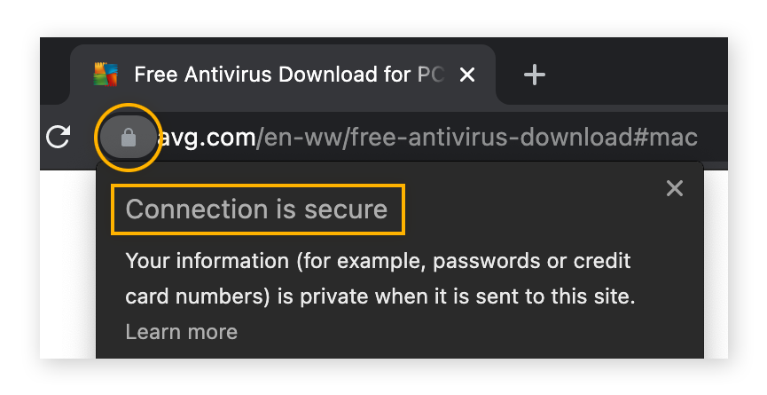
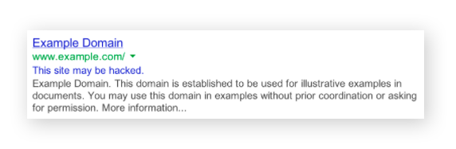

Checking a URL before clicking on it is a simple way to perform your own website safety test. In other words, to check if a link is safe, find out where the link leads before you click on it. How? Just mouse-over any link to verify the URL it’s actually linked to.
Making sure any website you visit uses HTTPS is another way to make sure the site is safe. HTTP (Hypertext Transfer Protocol) is the fundamental protocol for sending data between your web browser and the websites you visit. HTTPS is just the secure version of this — the “S” stands for “secure.” HTTPS is often used for online banking and shopping, because it encrypts your communications to prevent criminals from stealing sensitive information like your passwords. To see if a site uses HTTPS, check for the padlock in your browser’s navigation bar. If you see it, the site you’re on is using a trusted SSL digital certificate to protect your connection to it.
If a site has lots of flashing warnings, exclamation marks, or other kinds of spam, it’s probably a scam website.
If you arrive on site and tons of pop-ups appear, close the browser window immediately — the site could be infected with malvertising, adware, or another type of malware or virus. Clicking the pop-up window might trigger other pop-ups, so close the window by pressing Alt + F4 (on Windows) or using Windows Task Manager (Ctrl + Shift + Esc) to force-quit the process.
If you get immediately redirected to a different website, especially a suspicious one, this is a malicious redirect. It can mean that the original site is fake or that a legitimate site got hacked. The original site may not have malicious intentions, but until they clean up their code and remove the malware, you don’t want to be there.
When you search online, the search engine may display warnings next to some links, such as “This site may be hacked” or “This site may harm your computer.” Though these warnings aren’t completely accurate, if you see one, visit a different URL instead.
